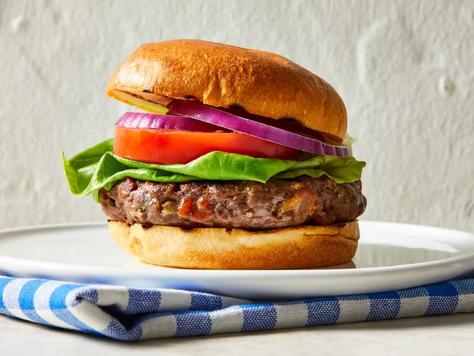

Burger

Description
A classic beef burger features a juicy, well-seasoned beef patty cooked
until browned on the outside while remaining tender on the inside.
Served on a toasted bun with fresh toppings, it's a timeless meal that's
easy to customize.
Whether topped with cheese, lettuce, tomatoes, onions, or your favorite
sauce, a homemade beef burger delivers great flavor and is perfect for
lunch, dinner, or a weekend barbecue.
Ingredients
- 500 g (1 lb) ground beef (80/20 preferred)
- 1 teaspoon salt
- ½ teaspoon black pepper
- 1 teaspoon garlic powder
- 1 teaspoon onion powder
- 4 burger buns
- 4 slices cheddar cheese (optional)
- Lettuce leaves
- Tomato slices
- Onion slices
- Pickles
- Ketchup, mustard, or mayonnaise, to taste
Directions
-
In a bowl, season the ground beef with salt, black pepper, garlic
powder, and onion powder.
-
Divide the meat into four equal portions and gently shape them into
burger patties.
- Preheat a grill or skillet over medium-high heat.
-
Cook the patties for about 4 to 5 minutes on each side, or until they
reach your preferred level of doneness.
-
If using cheese, place a slice on each patty during the last minute of
cooking and allow it to melt.
- Lightly toast the burger buns on the grill or in a skillet.
-
Assemble the burgers by placing the patties on the buns and adding
lettuce, tomato, onion, pickles, and your favorite sauces.
- Serve immediately with fries, chips, or a fresh salad.